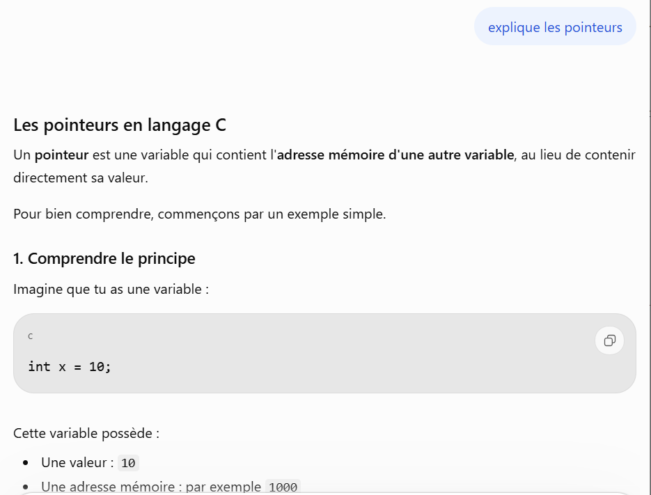
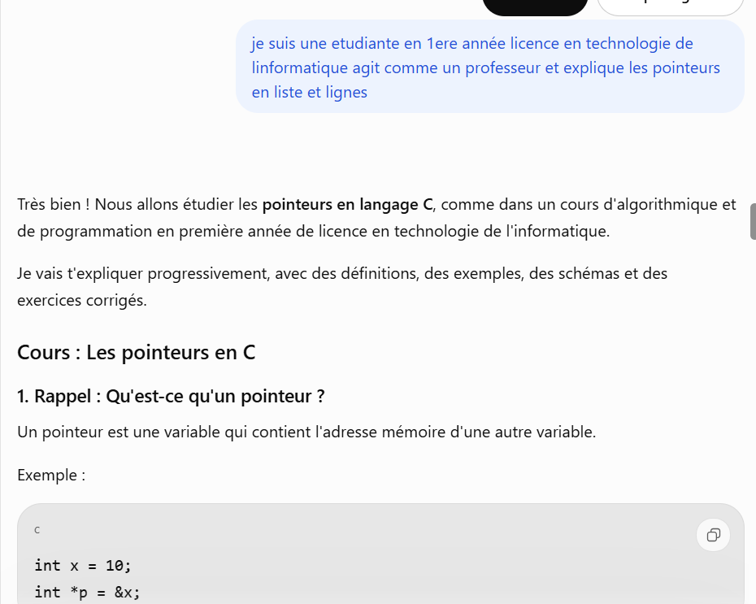
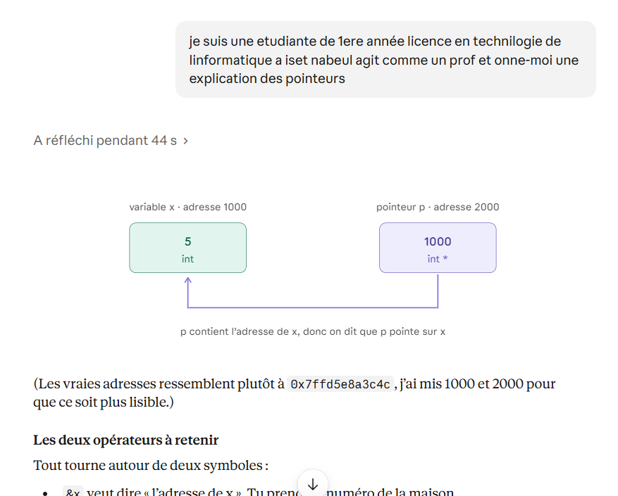
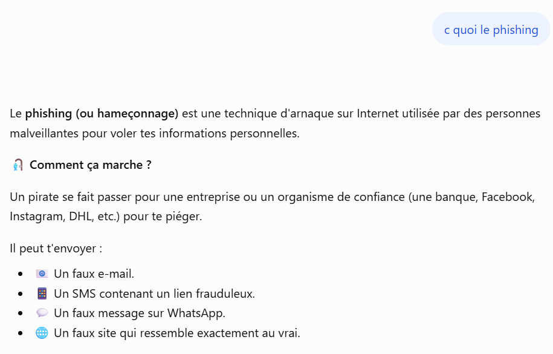
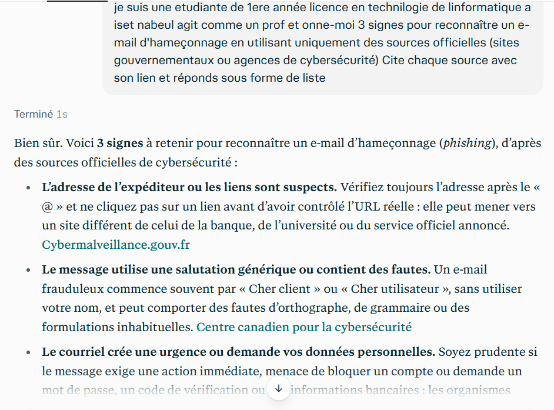

Prompt engineering
Un prompt est la demande qu'on écrit à une IA. Plus il est précis, meilleure est la réponse. Voici ce que j'ai appris en testant mes propres prompts.
Les éléments d'un bon prompt
- Rôle : dire à l'IA qui elle est (« Tu es un professeur… »).
- Contexte : dire qui je suis et pourquoi je demande (« Je suis étudiante en 1re année… »).
- Tâche : dire clairement ce que je veux (expliquer, corriger, résumer…).
- Format de sortie : liste, tableau, nombre de lignes…
- Contraintes : nombre de mots, niveau de langue, sources officielles…
- Exemples : montrer à l'IA le type de réponse attendu.
Techniques utiles : demander un raisonnement étape par étape, donner des exemples, améliorer le prompt plusieurs fois, et demander à l'IA de vérifier sa réponse ou de citer ses sources.
Cas 1 : faire un CV
Prompt initial (faible) – Claude
« Je suis étudiante en 1re année de licence en informatique. Je veux faire un CV très professionnel, aide-moi. »
Résultat obtenu
Claude a créé un CV avec les informations d'une autre personne, parce que je n'avais pas donné mes informations.
Prompt amélioré
J'ai écrit un deuxième message avec mon nom, ma formation, mon bac, mes compétences, mes certificats, mes activités et mes langues. Je ne les recopie pas ici pour protéger mes données personnelles.
Résultat obtenu
Un CV correct à mon nom, avec les bonnes parties : profil, formation, projets, certificats, compétences et langues. Je ne publie pas mon CV sur ce site, pour la même raison.
Analyse
Sans contexte, l'IA a deviné et s'est trompée. Quand j'ai donné mes vraies informations, le résultat était juste. Leçon : il faut toujours donner le contexte et ne jamais laisser l'IA deviner. Mais il faut aussi faire attention aux informations personnelles qu'on partage et qu'on publie.
Cas 2 : comprendre les pointeurs en C (comparaison ChatGPT / Claude)
Prompt initial (faible) – ChatGPT
« explique les pointeurs »
Résultat obtenu
La réponse n'était pas détaillée et n'était pas adaptée à mon niveau.

Prompt amélioré – testé dans ChatGPT puis dans Claude
« Tu es un professeur patient. Explique les pointeurs en langage C à une étudiante de 1re année qui débute. Utilise une comparaison avec la vie quotidienne, un exemple de code de 5 lignes maximum, et 150 mots maximum. »
Résultat obtenu
Les deux réponses étaient beaucoup plus faciles à comprendre. J'ai préféré celle de Claude, parce qu'il explique mieux.


Analyse
J'ai ajouté un rôle (professeur patient), un contexte (étudiante de 1re année) et des contraintes (comparaison, 5 lignes de code, 150 mots). L'IA a adapté sa réponse à mon niveau. Le même prompt ne donne pas la même réponse selon l'outil : c'est utile de comparer.
Cas 3 : reconnaître le phishing avec des sources
Prompt initial (faible) – ChatGPT
« c quoi le phishing »
Résultat obtenu
Une explication générale avec des émojis, mais sans aucune source.

Prompt amélioré (écrit par moi) – Perplexity
« Je suis une étudiante de 1re année de licence en Technologies de l'informatique à l'ISET Nabeul. Agis comme un prof et donne-moi 3 signes pour reconnaître un e-mail d'hameçonnage en utilisant uniquement des sources officielles (sites gouvernementaux ou agences de cybersécurité). Cite chaque source avec son lien et réponds sous forme de liste. »
Résultat obtenu
Trois signes clairs : une adresse ou des liens suspects, une salutation générale ou des fautes, et un message urgent qui demande des données personnelles. Chaque signe a une source officielle (Cybermalveillance.gouv.fr, Centre canadien pour la cybersécurité).

Analyse
J'ai ajouté moi-même mon contexte et un rôle, et j'ai demandé des sources officielles et une liste. La réponse est plus précise et surtout vérifiable, grâce aux liens.
Ma bibliothèque de prompts
Cinq prompts que je peux réutiliser pour mes études. Je remplace simplement ce qui est entre crochets.
- Expliquer une notion : « Tu es un professeur patient. Je suis étudiante en 1re année de licence en informatique. Explique-moi [la notion] avec une comparaison de la vie quotidienne et un exemple simple, en 150 mots maximum. »
- Comprendre une erreur dans mon code : « Voici mon code en [langage] et le message d'erreur : [erreur]. Ne me donne pas la solution complète : explique-moi d'où vient l'erreur et donne-moi un indice pour la corriger moi-même. »
- Réviser un examen : « Tu es mon professeur de [matière]. Pose-moi 5 questions sur [le chapitre], une par une. Attends ma réponse avant de passer à la suivante, puis explique-moi mes erreurs. »
- Corriger un texte en français : « Corrige les fautes d'orthographe et de grammaire de ce texte sans changer mon style. Ensuite, fais la liste de mes fautes principales pour que j'apprenne : [mon texte] »
- Chercher une information avec des sources : « Je suis étudiante en informatique. Donne-moi les informations essentielles sur [le sujet] en utilisant uniquement des sources officielles ou scientifiques. Cite chaque source avec son lien et sa date, et réponds sous forme de liste. »
Transparence IA
Outils utilisés : ChatGPT, Claude, Perplexity.
Rôle de l'IA : les IA ont répondu aux prompts que j'ai testés. Claude m'a aussi aidée à organiser la page, à corriger mon français, et m'a proposé la bibliothèque de prompts.
Ce que j'ai fait moi-même : j'ai testé tous les prompts, j'ai amélioré moi-même le prompt sur le phishing, j'ai comparé les réponses, j'ai choisi l'outil que je préfère, j'ai relu et compris la bibliothèque de prompts, et j'ai fait les captures d'écran.
Sources vérifiées : les liens donnés dans la réponse du cas 3.